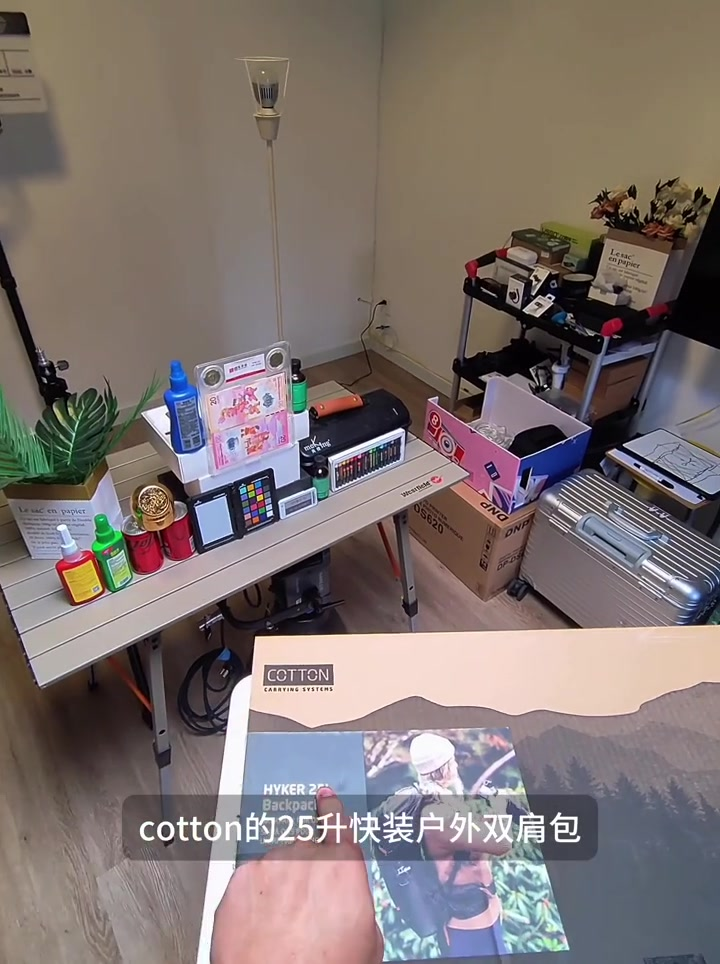
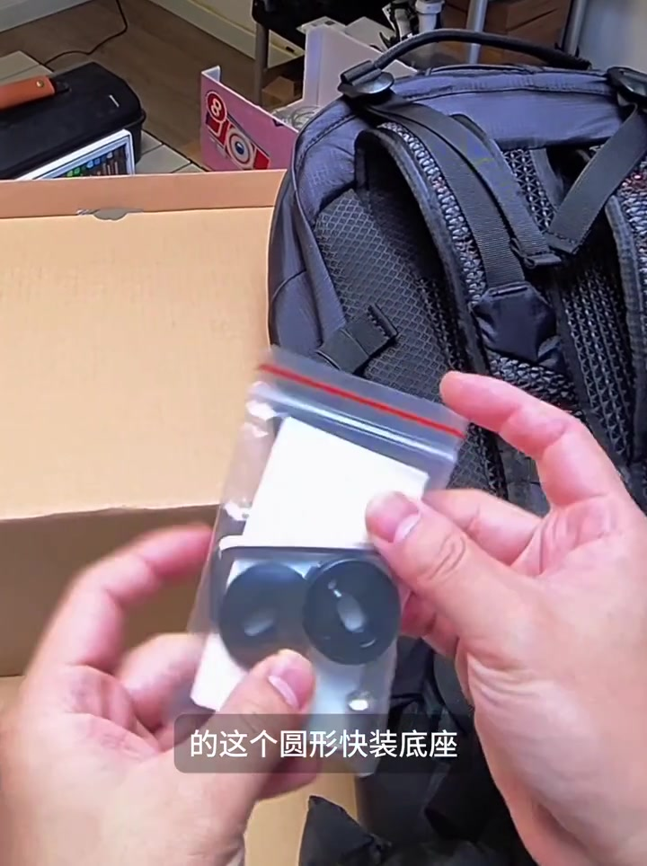
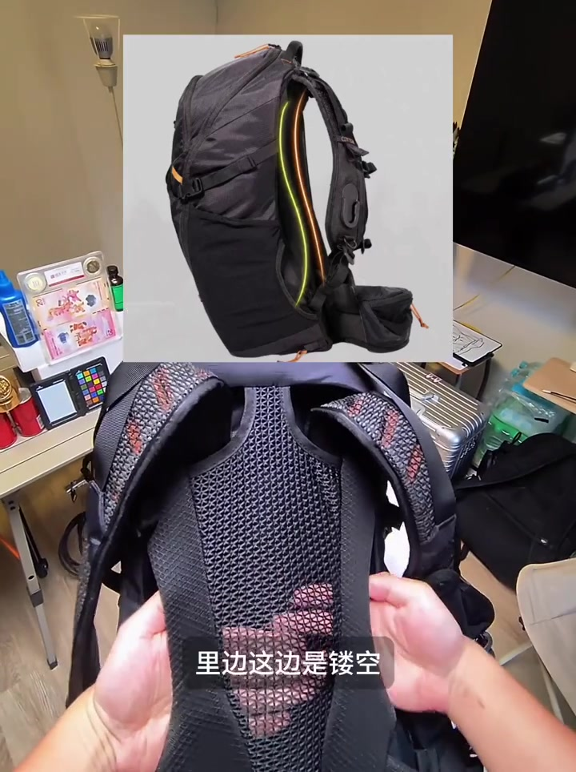
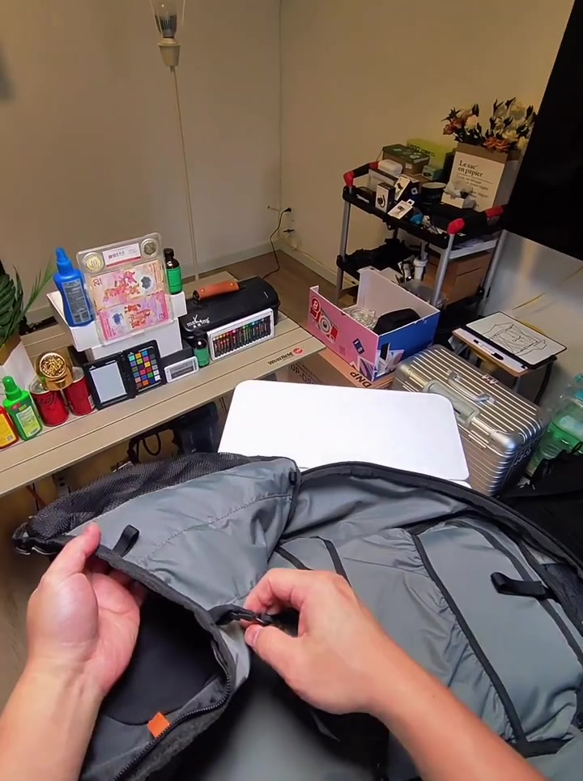
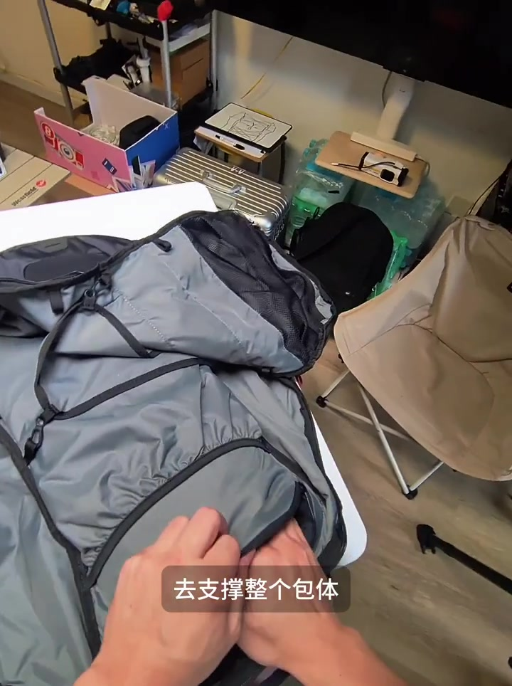
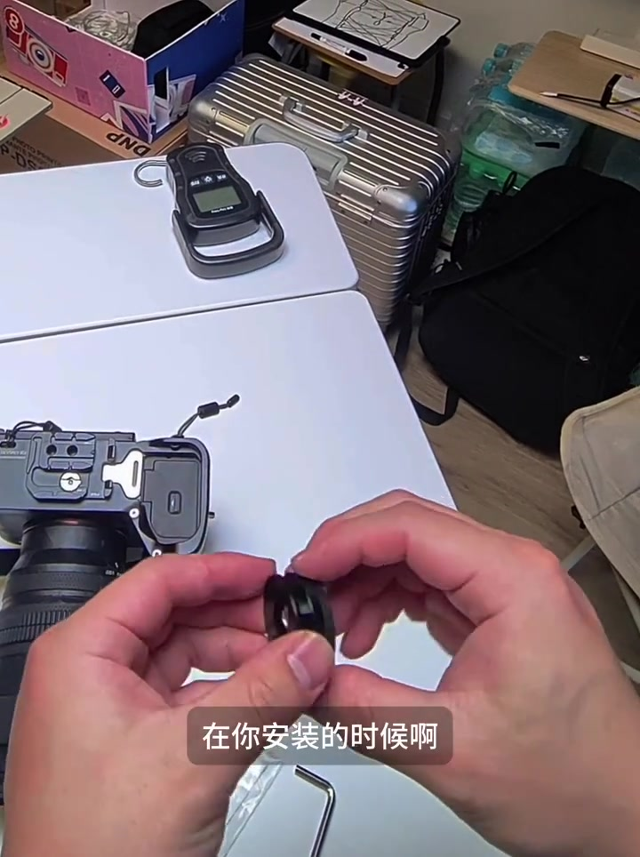
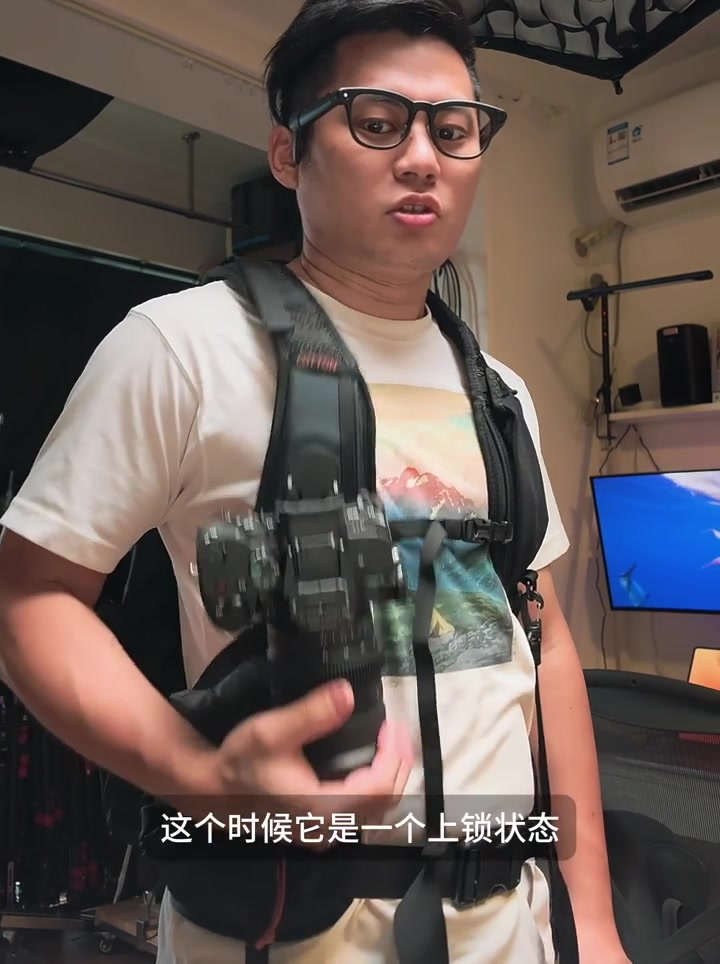
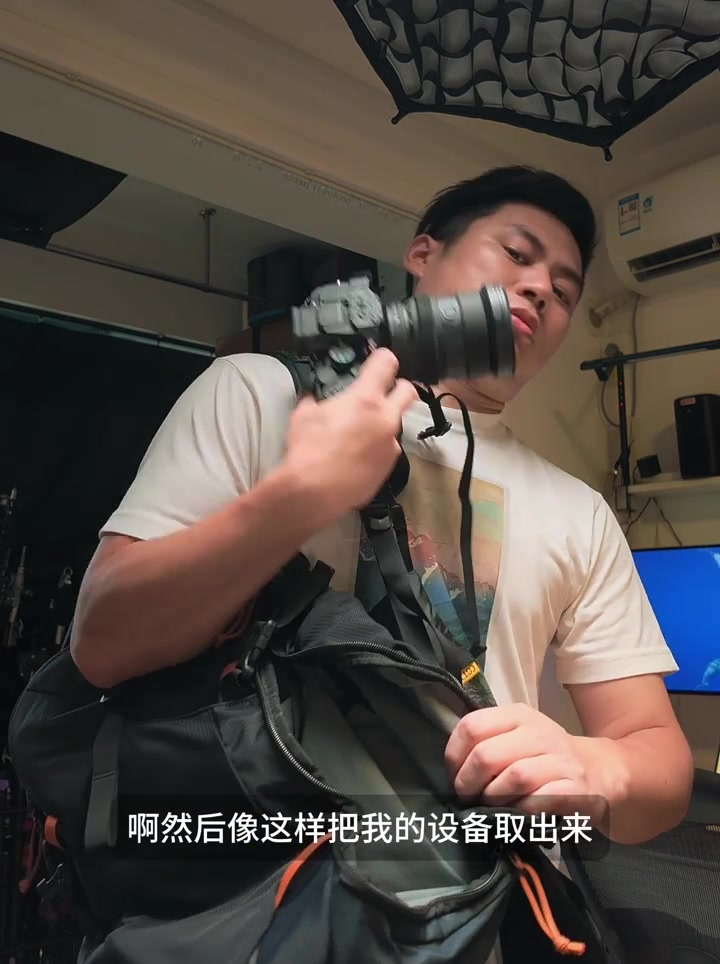

先把快挂逻辑演一遍，再翻开外箱
视频开头不是从说明书讲起，而是直接演示一体快挂：拿到相机后旋转，即可取下；装回去时放下、手一放松，底座进入上锁状态。主讲人 Pyro调随后说明，今天要快速开箱的是 Cotton 的 25 升快装双肩包——外包装扁平，25L 不算特别大，优势被他点在自家那套“非常好用的快装系统”上。

二维码说明书之后，他拿出原生圆形快装底座：软壳质感，属于包体配套的原厂件，而不是后期外挂的第三方金属快挂。

叙述校正：Whisper 把「COTTON」听成「卡通」，把「二维码」听成「二位马」；以下正文按可见字幕与外箱文字校正，文末转录保留原始分段。
腰带偏软、背板镂空，背长还能多档调节
腰带摸起来“不是很软”，也没有硬质框架塑形，但预留了快装位；胸带位置则没有哨子一类的小配件。两侧口袋里，一边摸起来偏硬，他判断是防雨袋；另一边是可收缩的水袋或太阳镜袋。上端肩带区是网格加泡棉，还有两条重心调节带；内部垫料他觉得不算厚，甚至有些偏薄。
背板被点名为悬浮型：内侧镂空，肩带可按背长调节，现场数出 1、2、3 多个挡位，幅度“看起来还挺大”。腰带本身不能拆；摸到腰部与底部都有金属框架支撑。下端还有防雨罩——其中一只他认为是专门给相机快挂侧使用的，挂在侧面后可罩上去。

转到正面，可见水舱/网袋拓展与两侧挂点，可挂登山杖或 DIY 头盔网；网面收缩带也一并展示。外侧口袋不是通底，只做到一半高度，但分割仓数量不少。
上仓不是褶皱扩展：掰开看框架，也看到空间代价
主讲人特意说明：上仓并不是褶皱式扩展，宽度就是实际宽度。拉链拉开后，包体可以几乎全部打开。悬浮背框会把背板“拗”起来——背负时散热更好，代价是网状结构会侵占内部空间，影响内胆与设备摆放。

框架细节：定型塑料板之外，还有中间细、两头宽的弧形硬质框架贯穿包体；腰部另有独立 L 型钩状框架支撑。开包逻辑是拉开后可掰开，解开收缩带还能继续下拉，呈现全开；背板位可塞笔记本，但因内凹设计，放笔记本后侵占会更明显。

分层兜可把上下仓隔开，分隔带有三档位置；内侧没有额外收纳口袋。他提到正常使用时还会配内胆包，但本支开箱未展开装机。
侧取能上下分仓，圆形底座用旋转偏转上锁
侧取拉链拉开后，可单侧拿取，上下分仓互不影响；拉链拉回上方即关闭侧取。底部还有可藏拉链头的防盗设计——他提醒这种材质在 Pick Design 上也见过，长期触地容易磨损。上方双头拉链开上侧，下方单侧拉链负责侧取，拉链头较大、线位过不去，他认为“还可以”。
快装底座是重点：上圆下有切面，装进去旋转即锁，再转一下就能提起取出。箭头要对准机身下沿，才能一次装到位。他对比传统 Arca 系需要单独上锁解锁的方式：Cotton 这套靠圆形结构下落产生方向偏转来锁定。

空包称重：未装内胆时整包 1.75 公斤。随后他背上包，进入穿戴体验段落。
空载初背舒服，但明确拒绝现在就下背负结论
背上后，腰部有脱离主框架的横向支撑顶住腰际，腰带环抱感不错；加上框架，空载时“确实还比较舒服”。但他立刻踩刹车：没有负重时，不能评价背负到底好不好，只能说初背上升体验尚可。
取放对比再次出现：相对传统 Arca 要用一只手解锁再提出，Cotton 的逻辑是转一下就能拿；装回去放下自然放松即上锁。他承认装回需要适应，但只要放上就不会掉；短时体验里，左右重心下滑和硬质结构顶胸的担忧尚未明显出现。

立场分层：舒适感、盲操评价均为主讲人短时主观体验；他本人明确声明尚未做负重长测。
一体硬质贴合 vs 肩带外挂：为什么更像背心
他把自家一体硬质板与以往“肩带外加快挂”对比：外挂金属件重、破坏左右平衡，弯腰时还会往前拖；一体硬质版更能贴身。调节好背长与重心带后，他预期会更舒服。取放过程中“到位拿出来、到位装回去”的体验，被判断为优于外挂肩位快装。
他还提到过往测评里很少推荐把快挂外装在肩膀位置——分离感、异物感明显，也会影响左右平衡。Cotton 上钩后更像背心环抱肩部，而不是一根外加背带。不过他再次提醒：不要着急入手，今天只是快速开箱，还没装上背负件做长时间测试。
解开胸带与腰带后，硬质板架仍贴在胸腹侧；他演示侧取——拉开侧边、取出设备、再滑回快挂自动锁定。镜头同时交代：机器也可从侧仓取出，或直接滑进胸前底座。

安全带二次保险，长测留给负重与内胆之后
把包背好后，腰带可把设备包住；另有安全带理论上可连住设备——即便误操作掉落，在可拉出长度内也有二次保险。收尾时，主讲人预告后续会在负重状态下体验背负、取放逻辑，以及搭配内胆后的整体意义。署名「我是 Pyro调」，邀请评论区留言。